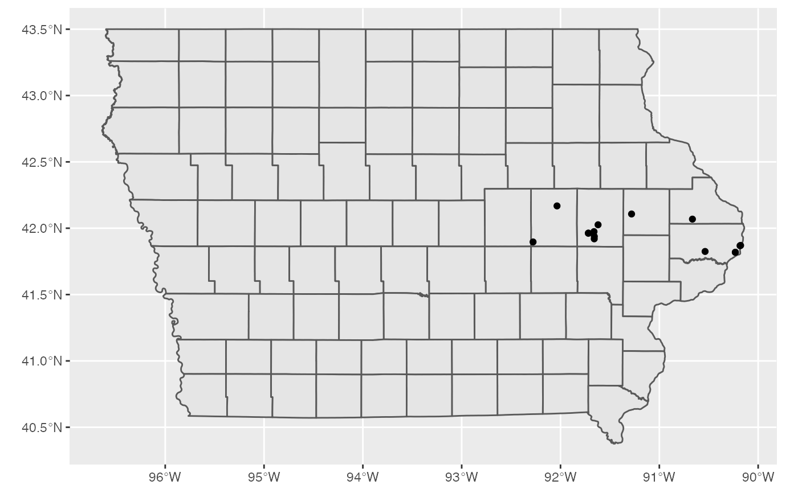

asac_locations.RdDataset was scraped from the ASAC website. This database contains ASAC location data for the State of Iowa
Name of the facility
Street Address for the facility
City, State, and Zip contained in one column separated by a space
Name of the city where the facility is located
5 digit Zip
State Abbreviation
address used in the Google API geocoding
sf object of geographic locations
column used for identification for filtering
asac_locations
An object of class sf (inherits from data.frame) with 15 rows and 9 columns.
http://www.asac.us/about/locations/
library(ggplot2) library(dplyr) asac_locations %>% ggplot() + geom_sf(data = ia_counties) + # iowa county shapes geom_sf() # add pointslibrary(leaflet) library(sf) asac_locations %>% leaflet() %>% addTiles() %>% addPolygons(data = ia_counties, weight = 1, color="#333333") %>% addCircleMarkers(radius = 1, stroke = 0.1, label=~name)